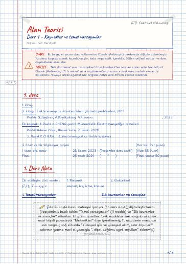
Ders 1 – Kaynaklar ve temel varsayımlar
1. ders · 1. Ders Notu
Electromagnetic Field Theory — lecture notes, past exams, and projects at Gebze Technical University (GTU) Electronics Engineering
Vektör analizi, elektrostatik (Coulomb ve Gauss yasaları, potansiyel, sınır koşulları), manyetostatik ve Maxwell denklemleri.
Vector analysis, electrostatics (Coulomb's and Gauss's laws, potential, boundary conditions), magnetostatics and Maxwell's equations.
Bu sayfada: Ders Notları Uygulama Notları Dijital Notlar (LaTeX) Çıkmış Sorular Final/Vize Çalışması Projeler Kaynak Kitaplar
El yazısı notların LaTeX ile yazılmış, aranabilir dijital versiyonları. Şablon ve derleme: latex-sablon.

1. ders · 1. Ders Notu
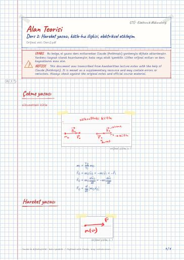
Çekme yasası · Hareket yasası · Elektriksel etkileşim yasası

Elektrostatik · Uygulama
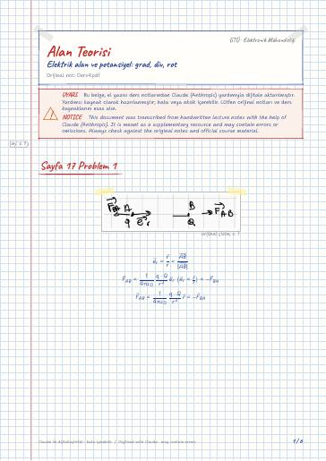
Sayfa 17 Problem 1 · N+1 yük olma durumu · Yükler ayrık değil de bir bölgeye dağılmışsa
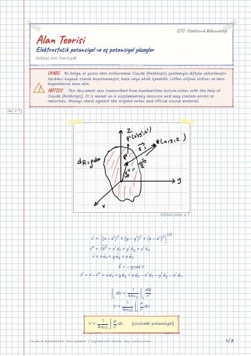

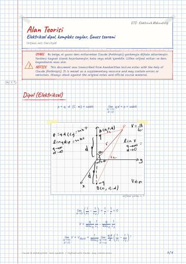
Dipol (Elektriksel) · Hadi kompleks sayılardan bahsedelim · Gauss Teoremi
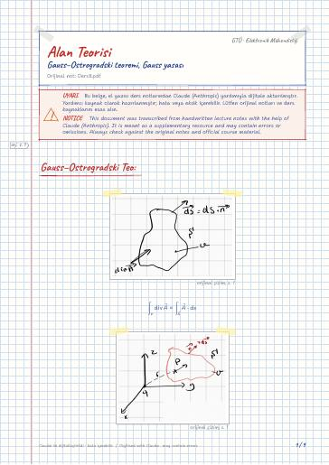
Gauss–Ostrogradski Teo
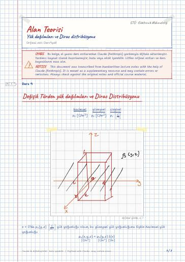
Değişik Türden yük dağılımları ve Dirac Distribüsyonu
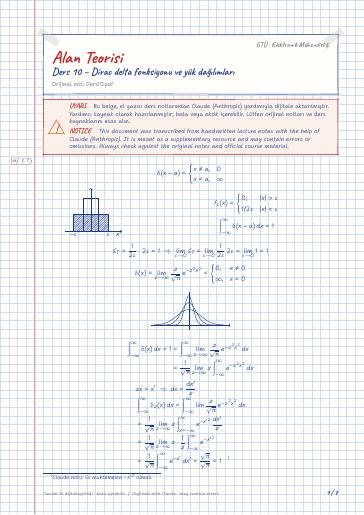
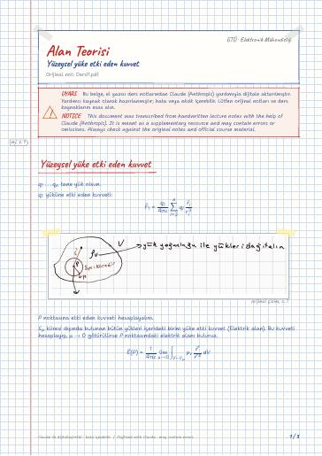
Yüzeysel yüke etki eden kuvvet · Sayfa 55 problem 1
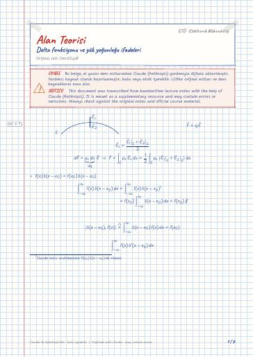

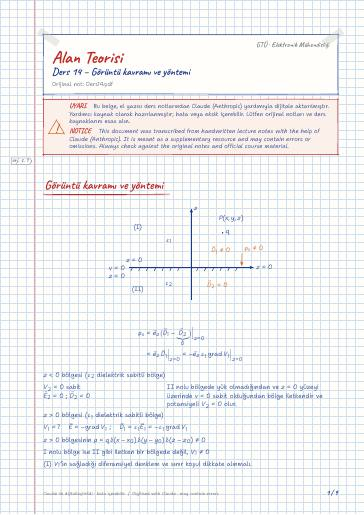
Görüntü kavramı ve yöntemi · Kapasite problemi
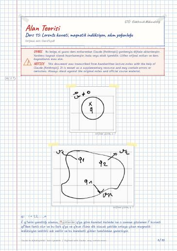
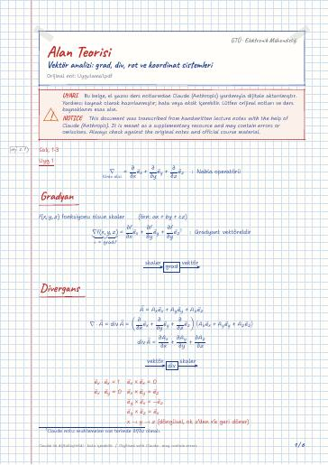
Gradyan · Divergans · Rotasyonel · Kartezyan koordinatlar · Silindirik koordinatlar · Küresel koordinatlar
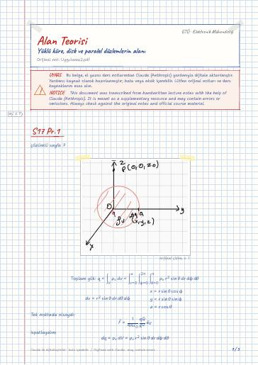
Neyse yeni soruya geçelim
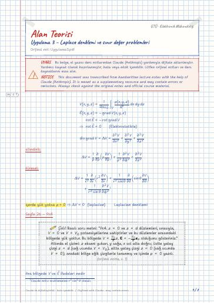
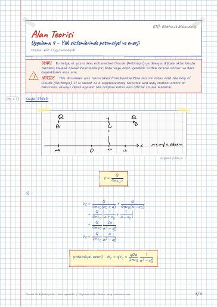
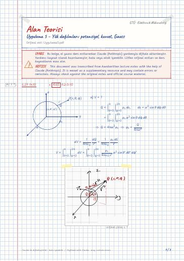
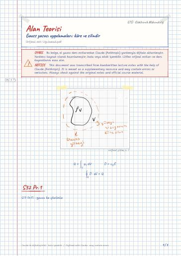
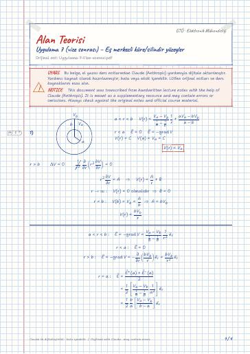
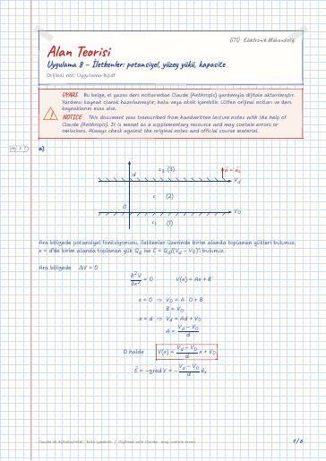
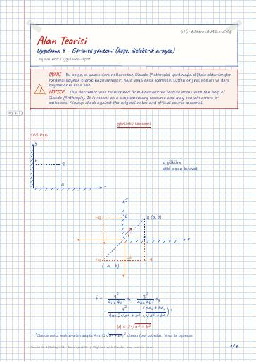
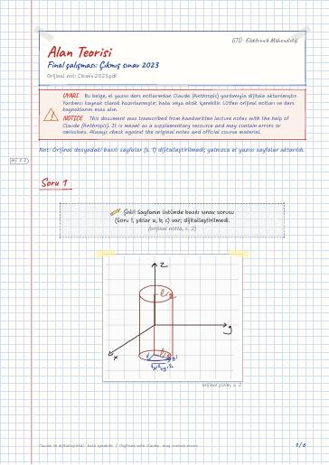
Soru 1 · Soru 2 · Soru 3 · Silindirik · Sınır koşulları

Uygulama 7 – İç içe iki küre · Ders 9 – Değişik türden yük dağılımları ve Dirac Distribüsyonu · δ(x)'in özellikleri · Uygulama 8 – sayfa 43 · Ders 10 · Ders 11 – Yüzeysel yüke etki eden kuvvet

Uygulama 7 – iç içe iki küre · Ders 9: Değişik türden yük dağılımları ve Dirac Distribüsyonu · δ(x)'in özellikleri · Uygulama 8 (sayfa 43) · Ders 10 · Ders 11
Derste kullanılan kaynaklar (kitapların kendisi telif hakları nedeniyle yayımlanmaz):
Analog Haberleşme · Elektromekanik Enerji Dönüşümü · Elektronik II · Elektronik II Laboratuvarı · Mikroişlemciler · Mikroişlemciler Laboratuvarı
GitHub'da klasörü aç← 5. Dönem
Ders materyallerinin hakları ilgili öğretim üyelerine ve GTÜ'ye aittir; eğitim amacıyla paylaşılmıştır.